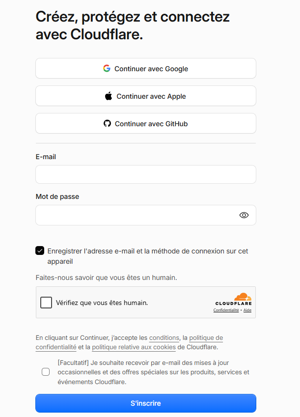
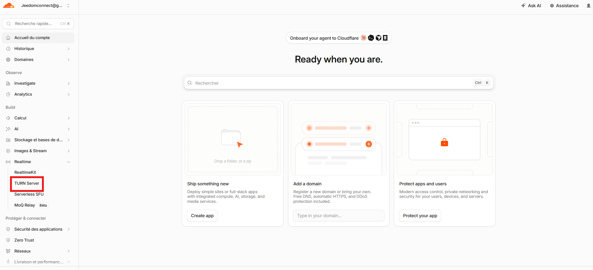
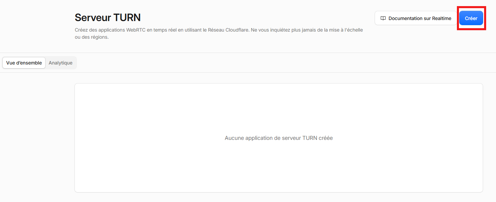
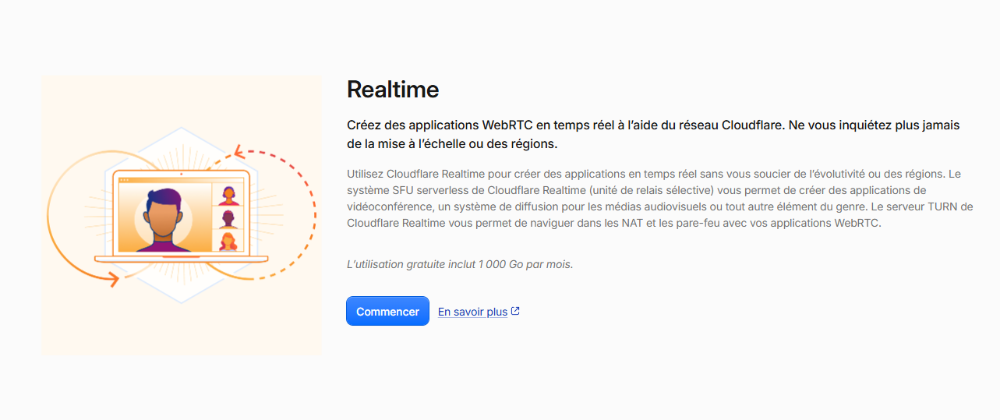
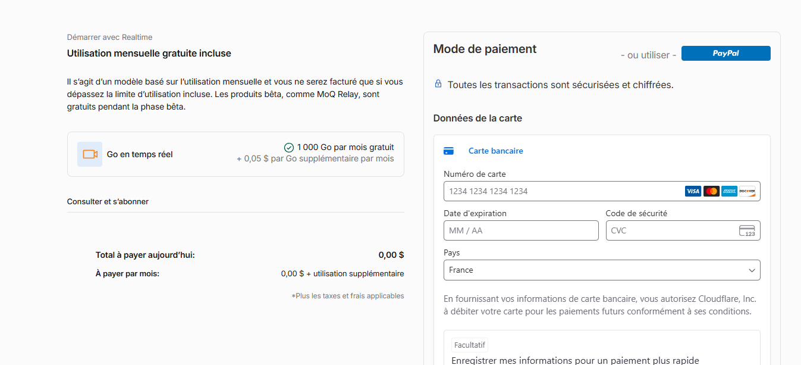
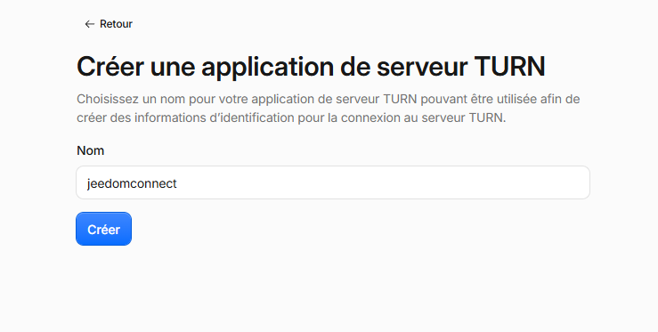
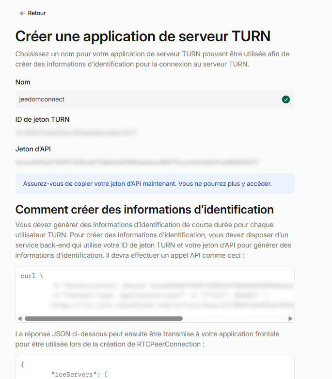
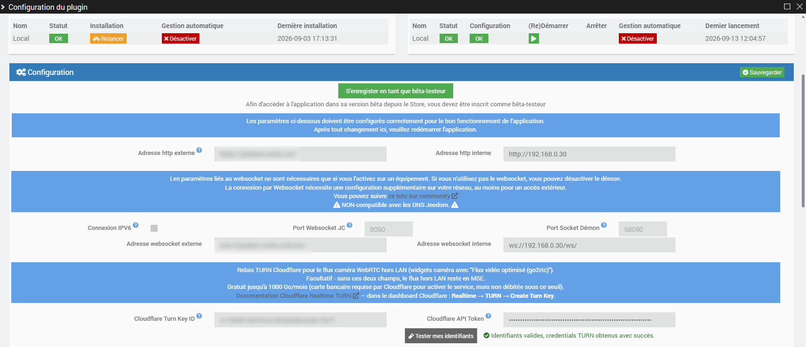

Caméra hors LAN en WebRTC (relais TURN Cloudflare)
À quoi sert cette configuration ?
Les widgets caméra utilisant l'option "Flux vidéo optimisé (go2rtc)" peuvent afficher le flux en WebRTC (faible latence, quasi instantané) même lorsque vous n'êtes pas sur le réseau local de votre Jeedom. Pour cela, il faut un relais TURN : un service qui permet à votre téléphone et à votre Jeedom de se joindre malgré les box/routeurs qui bloquent les connexions directes entrantes.
JeedomConnect utilise le service Cloudflare Realtime TURN, gratuit jusqu'à 1000 Go de données relayées par mois (largement suffisant pour un usage personnel).
Cette configuration est facultative. Sans elle, les caméras hors LAN continuent de fonctionner normalement, simplement avec un flux vidéo un peu moins réactif (mode MSE).
Ce tutoriel couvre l'option gratuite (votre propre compte Cloudflare). Si vous ne souhaitez pas créer de compte Cloudflare, un abonnement géré (avec essai gratuit sans carte bancaire) existe aussi - voir la page Caméra hors LAN (relais TURN) pour comparer les deux options.
Pré-requis
- Un compte Cloudflare (gratuit)
- Une carte bancaire à renseigner lors de l'activation du service (demandée par Cloudflare, mais non débitée tant que vous restez sous le palier gratuit de 1000 Go/mois)
Si vous ne souhaitez donner aucune carte bancaire à Cloudflare, cette fonctionnalité n'est malheureusement pas utilisable pour l'instant - les caméras hors LAN resteront en mode MSE.
Étape 1 - Créer un compte Cloudflare
Rendez-vous sur dash.cloudflare.com/sign-up et inscrivez-vous (email/mot de passe, ou via Google/Apple/GitHub).

Étape 2 - Accéder au serveur TURN
Une fois connecté au dashboard, dans le menu de gauche, dépliez Realtime puis cliquez sur TURN Server.

Vous arrivez sur la page Serveur TURN, vide pour l'instant. Cliquez sur Créer.

Étape 3 - Activer Realtime
Si c'est la première fois que vous utilisez un produit Realtime, une page de présentation s'affiche, rappelant le palier gratuit de 1000 Go par mois. Cliquez sur Commencer.

Cloudflare vous demande ensuite un moyen de paiement (carte bancaire ou PayPal) pour activer le service.

Ce moyen de paiement ne sera débité que si vous dépassez le palier gratuit de 1000 Go/mois.
Étape 4 - Créer votre application TURN
Donnez un nom à votre application TURN (par exemple jeedomconnect), puis cliquez sur Créer.

Cloudflare affiche alors les deux informations dont vous avez besoin : l'ID de jeton TURN et le Jeton d'API.

Le Jeton d'API n'est affiché qu'une seule fois, à cet instant. Copiez-le immédiatement dans un endroit sûr - si vous le perdez, il faudra créer une nouvelle application TURN pour en obtenir un autre.
Étape 5 - Renseigner les identifiants dans JeedomConnect
Rendez-vous sur la page Gestion du plugin JeedomConnect, cliquez sur Services de streaming, jusqu'à la section décrivant le relais TURN Cloudflare :

Renseignez :
- Cloudflare Turn Key ID : l'ID de jeton TURN récupéré à l'étape précédente
- Cloudflare API Token : le Jeton d'API récupéré à l'étape précédente
Cliquez sur Sauvegarder, puis sur le bouton Tester mes identifiants juste en dessous : un message vert confirme que tout est correctement configuré.
C'est terminé ! Vos widgets caméra en mode "Flux vidéo optimisé (go2rtc)" utiliseront désormais le relais Cloudflare automatiquement lorsque vous consultez une caméra hors de votre réseau local.